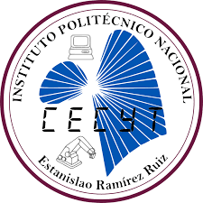

Centro de Estudios Científicos y Tecnológicos No. 3 "Estanislao Ramírez Ruiz"

Centro de Estudios Científicos y Tecnológicos No. 3 "Estanislao Ramírez Ruiz"
Computacion Basica 2
Profesora Naxhiely Wendoline Sandoval Trasviña
Alumno Alfaro Costilla Cesar Elias
Grupo 2IM6
Proyecto: Portada de Hipervinculos a Practicas
Bienvenidos a mi página
Esta es mi portada para mis hipervinculos. Aquí tienes mis enlaces:
Estructura Basica de Paginas
Listas Anidadas
Imagenes y multimedia
Hipervinculos
Tablas
Practicas-de-Continentes